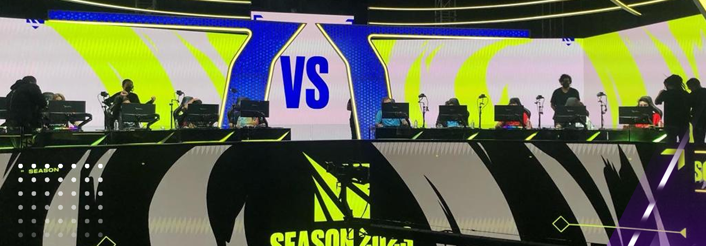

La LLA 2023 arrancó con nuevos equipos y cambio de formato
Tras la participación de Isurus en el Mundial 2022, la Liga Latinoamérica regresó con el torneo Apertura y varias novedades.
Tras un año que no dejó buenos rendimientos de los equipos campeones a nivel internacional y tuvo un marcado descenso en la cantidad de viewers, con la enorme salvedad de la histórica presencia del Mundial en México, la Liga Latinoamérica de League of Legends inició su torneo Apertura 2023 con bastantes cambios: nuevos casters, equipos y formato.
La LLA 2023 arrancó con nuevos equipos y cambio de formato
El argentino Josedeodo, quien estuvo dos temporadas en Estados Unidos, marcó uno de los grandes regresos a la competencia de la mano de Estral, equipo que busca sacarse la espina y clasificarse a un certamen internacional luego de finalizar segundo en los últimos tres torneos de la región. En su debut, derrotó por 2-0 a Isurus, el último campeón.
Por su parte, Infinity, otro de los grandes animadores de los últimos años, renovó su equipo con los ingresos de 5kid, Keine y Zerito y mantuvo a dos viejos conocidos como Ackerman y SolidSnake. En su presentación, se mostró sólido ante Team Aze y consiguió un 2-0. En tanto, R7 superó por el mismo resultado a All Knights y Six Karma hizo lo propio ante The Kings.
El último encuentro de la primera jornada justamente tuvo a los dos nuevos elencos de la LLA en 2023. The Kings, con experimentados nombres como Buggax, Baula y Top Lop, consiguió su lugar tras superar en la Promoción-Relegación a Globant. En tanto, Six Karma tomó el cupo de Xten Esports.
El nuevo formato de la LLA
Luego de dejar atrás el criticado pentágono en la temporada pasada y con los malos resultados en MSI y mundiales en las espaldas, la LLA decidió apostar por un nuevo formato en 2023. En esta ocasión, los ocho equipos se enfrentarán en single round robin y duelos al mejor de tres partidas: la victoria 2-0 entrega tres puntos y el 2-1, dos unidades.
Los seis mejores elencos de la primera fase accederán a los playoffs, donde el primer seed decidirá si compite contra tercero o cuarto. Los cuatro mejores jugarán en la llave alta, mientras que quinto y sexto comenzarán en el bracket de perdedores. Todas las series serán al mejor de cinco mapas. El campeón del Apertura se clasificará al Mid Season Invitational.